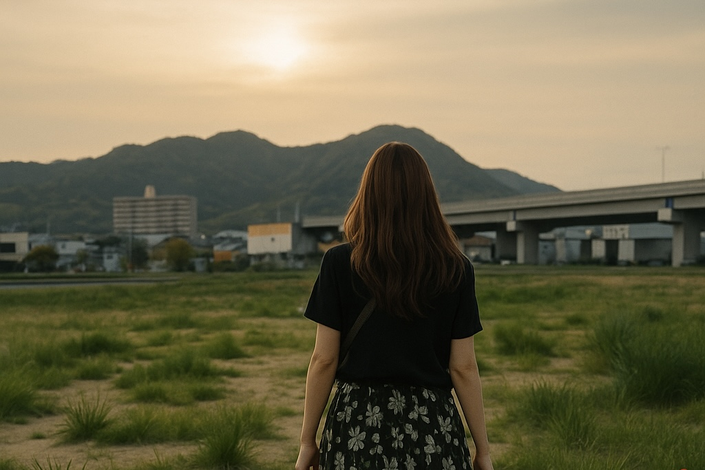

エピソード1
原風景を求めて
2025.05.03
Rは姫路に戻った。フォークノード計画、ヒメモリの地――次世代に原風景を残すため、彼女の足は自然と動き出していた。紹介されるキーパーソンたち。地域に根ざす人々。少しずつ顔と声がつながり、コミュニティの輪が広がっていく。
だが、その中で見えてきたのは、いくつもの壁だった。計画が動き出すスピード、関わる人々の複雑な思惑、時間の余裕のなさ。それでもRは、同じ志を持つ仲間たちと出会い、語り合い、笑い合いながら、未来を描き始めていく。どうすれば競合ではなく、共に歩む立場になれるのか。どうアプローチすればこの街の未来を守れるのか。小さなテーブルで戦略は静かに練られ、夜は更けていった。

一方、夫の平尾は妻に寄り添い、各地のヒアリングに同行していた。

その一週間の間に、奇妙な出来事が重なる。ある店では革ジャンを着た男に間違われ、別の料理屋では着物姿の男と呼び間違えられ、さらには「テレビで見た」と声をかけられる。心当たりのないその人物像に、平尾はただ首をかしげるしかなかった。

そして街のどこかに、自分と“似た誰か”が存在するらしい――そんなぼんやりとした気配だけが、平尾の胸に残った。